从零学习开源项目系列（四）LogServer源码探究
这是从零学习开源项目的第四篇，上一篇是《从零学习开源项目系列（三） CSBattleMgr服务源码研究》，这篇文章我们一起来学习LogServer，中文意思可能是“日志服务器”。那么这个日志服务器到底做了哪些工作呢？
我们在Visual Studio中将LogServer设置为启动项，然后按F5将LogServer启动起来，启动成功后显示如下图：
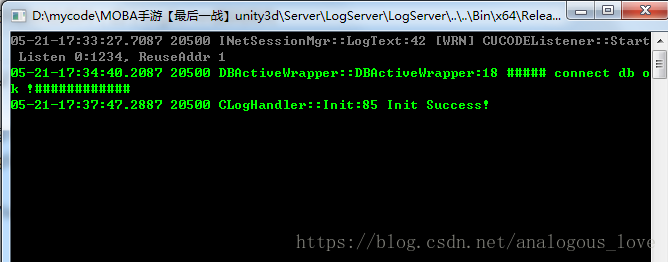
从上图中，我们可以到大致做了三件事：
1. 创建一个侦听端口（端口号1234）
2. 连接mysql数据库
3. 初始化日志处理程序
我们来验证一下这三件事的细节。我们再Visual Studio中将程序中断（【调试】菜单-【全部中断】，快捷键Ctrl + Alt + Break）。然后在线程窗口查看这个程序所有的线程，如下图所示：
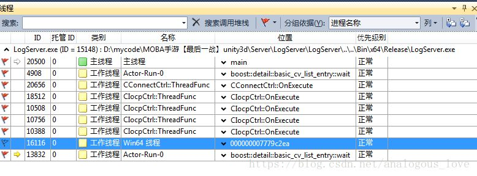
所有用红色旗帜标记的线程都是用户线程，我们可以查看这些线程的调用堆栈。我们从最上面的主线程开始：
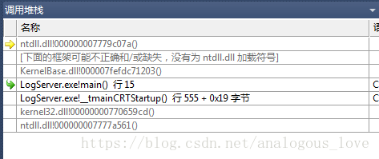
切换到main函数，我们可以看出这里是一个循环：
int main()
{
auto res = CLogHandler::GetInstance().Init();
if (res)
{
while(true)
{
INetSessionMgr::GetInstance()->Update();
Sleep(1);
}
}
return 0;
}
这里一个是初始化动作，一个循环中Update动作，它们具体做了些什么，我们先不管，我们先看其他线程做了什么，再回过头来看这里的代码。
我们接着看下一个线程的内容：
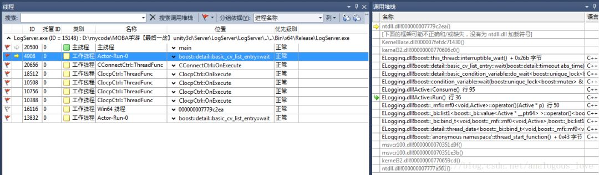
从调用堆栈来看，这是一个使用boost::thread启动的线程，这个线程函数代码如下：
void Active::Run() {
if (m_BeginInThreadCallback){
m_BeginInThreadCallback();
}
while (true){
Consume();
}
}
我们先看下这个线程函数做了什么，主要是m_BeginInThreadCallback和Consume()函数，看下Consume()函数：
void Active::Consume(){
boost::mutex::scoped_lock lock(m_IOMutex);
while(m_Queue.empty()){
m_ConditionVar.wait(lock);
}
m_SwapQueue.swap(m_Queue);
lock.unlock();
while(!m_SwapQueue.empty()){
Buffer* pBuffer = m_SwapQueue.front();
m_SwapQueue.pop();
m_Callback(pBuffer);
--m_PendingWorkNum;
if (pBuffer){
m_pBufferPool.ReleaseObejct(pBuffer);
}
}
}
这段代码很好理解，先使用条件变量挂起当前线程，条件变量触发后，如果消费者和生产者共有队列m_Queue中有数据，将公用的队列m_Queue临时倒换到本地的一个局部队列m_SwapQueue中，然后挨个处理队列m_SwapQueue中的数据。
这个线程在哪里创建的呢？通过搜索线程函数，我们找到如下代码：
void Active::Start(){
bool ifHvTimer = !m_ThreadTimer.IsEmpty();
if (ifHvTimer){
m_Thread = boost::thread(&Active::RunWithUpdate, this);
}
else{
m_Thread = boost::thread(&Active::Run, this);
}
m_ThreadID = get_native_thread_id(m_Thread);
char sThreadName[30];
sprintf(sThreadName, "%s-%d", "Actor-Run", GetActorID());
_SetThreadName(m_ThreadID, sThreadName);
}
在上面这个函数中添加断点，重启下程序，很快会触发断点，我们看下断点触发时的调用堆栈：
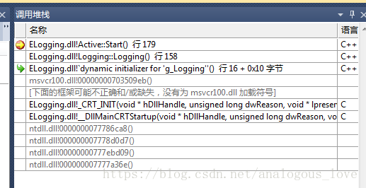
通过调用堆栈，我们发现这个线程在一个全局变量的构造函数中初始化的，这个全局变量在DllMain()函数中初始化：
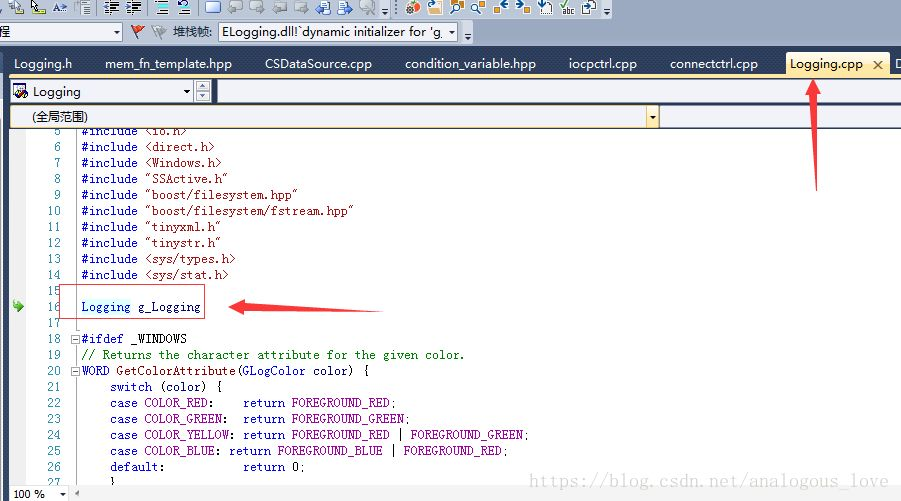
而这个dll是ELogging项目生成的：
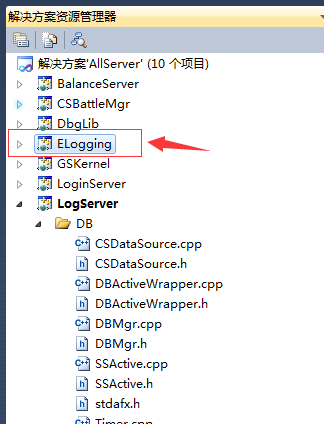
也就是说，这是一个与日志处理相关的线程。生产者产生日志记录，然后由这个线程作为消费者，来处理日志。
我们接着看下一个线程的内容：
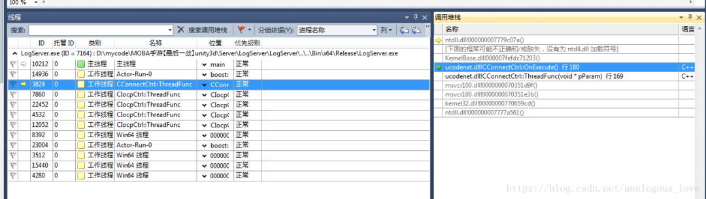
void CConnectCtrl::OnExecute()
{
while(!m_bTerminate)
{
_ProcRequests();
_ProcEvents();
//CCPSockMgr::Instance()->CheckDelayRelease();
Sleep(1);
}
}
这也是一个循环，先看下_ProcRequests()函数：
void CConnectCtrl::_ProcRequests()
{
while(m_dwSockCount < (UINT32)MAX_CONNECTION)
{
SConnReq* pstConnReq = (SConnReq*)m_oReqQueue.PopFront();
if(NULL == pstConnReq)
{
break;
}
SOCKET hSock = socket(PF_INET, SOCK_STREAM, IPPROTO_IP);
if(INVALID_SOCKET == hSock)
{
CRITICAL(_SDT("CConnectCtrl::_ProcRequests, socket failed, errno %d"), WSAGetLastError());
CEventMgr::Instance()->PushConnErrEvt(WSAGetLastError(), pstConnReq->dwConnectorID);
m_oFreeQueue.PushBack(pstConnReq);
break;
}
//// 2009-04-02 cwy modify for general use
if (pstConnReq->bNeedBind)
{
if ( false == BindAddress(hSock, pstConnReq->pszBindIP, pstConnReq->wBindPort) )
{
_OnSockError(hSock, pstConnReq);
break;
}
}
if (g_bNodelay)
{
const CHAR szOpt = 1;
if (0 != ::setsockopt(hSock, IPPROTO_TCP, TCP_NODELAY, (char *)&szOpt, sizeof(char)))
{
WARN(_SDT("setsockopt for new socket on UpdateConetext failed, errno=%d"), ::WSAGetLastError());
}
}
WSAEVENT hEvent = WSACreateEvent();
if(WSA_INVALID_EVENT == hEvent)
{
_OnSockError(hSock, pstConnReq);
break;
}
if(SOCKET_ERROR == WSAEventSelect(hSock, hEvent, FD_CONNECT))
{
_OnSockError(hSock, pstConnReq);
WSACloseEvent(hEvent);
break;
}
sockaddr_in stAddr = {0};
stAddr.sin_family = AF_INET;
stAddr.sin_addr.s_addr = pstConnReq->dwIP;
stAddr.sin_port = htons(pstConnReq->wPort);
if( SOCKET_ERROR == connect(hSock, (sockaddr*)&stAddr, sizeof(stAddr)) )
{
if(WSAEWOULDBLOCK != WSAGetLastError())
{
_OnSockError(hSock, pstConnReq);
WSACloseEvent(hEvent);
break;
}
}
m_pProcReqArray[m_dwSockCount] = pstConnReq;
m_pSockArray[m_dwSockCount] = hSock;
m_pEventsArray[m_dwSockCount] = hEvent;
++m_dwSockCount;
}
}
这段函数的逻辑也是比较容易懂，先从一个队列中取出数据，然后处理，只不过这些数据都是与连接相关的信息。
再看下while循环中第二个函数_ProcEvents：
void CConnectCtrl::_ProcEvents()
{
if(0 == m_dwSockCount)
{
return;
}
WSANETWORKEVENTS stNetworkEvents;
WSAEVENT* pEvents;
UINT32 dwCount;
UINT32 dwIndex;
UINT32 dwStart = 0;
do
{
pEvents = &m_pEventsArray[dwStart];
if(dwStart + WSA_MAXIMUM_WAIT_EVENTS > m_dwSockCount)
{
dwCount = m_dwSockCount - dwStart;
}
else
{
dwCount = WSA_MAXIMUM_WAIT_EVENTS;
}
dwIndex = WSAWaitForMultipleEvents(dwCount, pEvents, false, 0, false);
if(WSA_WAIT_FAILED == dwIndex || WSA_WAIT_TIMEOUT == dwIndex)
{
dwStart += dwCount;
continue;
}
dwIndex -= WSA_WAIT_EVENT_0;
dwIndex += dwStart;
++dwStart;
SDASSERT(m_pProcReqArray[dwIndex] != NULL && m_pSockArray[dwIndex] != INVALID_SOCKET && m_pEventsArray[dwIndex] != WSA_INVALID_EVENT);
if(SOCKET_ERROR == WSAEnumNetworkEvents(m_pSockArray[dwIndex], m_pEventsArray[dwIndex], &stNetworkEvents))
{
if(WSAEWOULDBLOCK != WSAGetLastError())
{
CEventMgr::Instance()->PushConnErrEvt(WSAGetLastError(), m_pProcReqArray[dwIndex]->dwConnectorID);
_CloseEvent(dwIndex);
}
continue;
}
if(stNetworkEvents.lNetworkEvents & FD_CONNECT)
{
if(stNetworkEvents.iErrorCode[FD_CONNECT_BIT] != 0)
{
CEventMgr::Instance()->PushConnErrEvt(stNetworkEvents.iErrorCode[FD_CONNECT_BIT], m_pProcReqArray[dwIndex]->dwConnectorID);
_CloseEvent(dwIndex);
continue;
}
//
// 连接成功
//
SConnReq* pstReq = m_pProcReqArray[dwIndex];
CConnData * pConnData = CConnDataMgr::Instance()->Alloc(pstReq->dwRecvBufSize, pstReq->dwSendBufSize);
if (pConnData == NULL)
{
CRITICAL(_SDT("CConnectCtrl::_ProcEvents, create ConnData failed"));
CEventMgr::Instance()->PushConnErrEvt(0, pstReq->dwConnectorID);
_CloseEvent(dwIndex);
continue;
}
CCPSock *poSock = &pConnData->sock;
CUCConnection * poConnection = &pConnData->connection;
poSock->SetSock(m_pSockArray[dwIndex]);
m_oFreeQueue.PushBack(m_pProcReqArray[dwIndex]);
WSACloseEvent(m_pEventsArray[dwIndex]);
m_pProcReqArray[dwIndex] = NULL;
m_pSockArray[dwIndex] = INVALID_SOCKET;
m_pEventsArray[dwIndex] = WSA_INVALID_EVENT;
sockaddr_in stAddr = {0};
INT32 nAddrLen = sizeof(stAddr);
getsockname(poSock->GetSock(), (sockaddr*)&stAddr, &nAddrLen);
poConnection->SetAccept(false);
poConnection->SetParentID(pstReq->dwConnectorID);
poConnection->SetSession(pstReq->poSession);
poConnection->SetLocalIP(stAddr.sin_addr.s_addr);
poConnection->SetLocalPort(SDNtohs(stAddr.sin_port));
poConnection->SetRemoteIP(pstReq->dwIP);
poConnection->SetRemotePort(pstReq->wPort);
//poConnection->SetCpSock(poSock);
//poSock->SetConnection(poConnection);
poSock->SetPacketParser(pstReq->poPacketParser);
poSock->SetConnect(TRUE);
//CEventMgr::Instance()->PushEstablishEvt(pConnData, false, pstReq->dwConnectorID);
if(false == poSock->AssociateWithIocp())
{
poSock->Close();
}
else
{
if(false == poSock->PostRecv())
{
poSock->Close();
}
}
}
}while(dwStart < m_dwSockCount);
_CompressEvent();
}
这个函数，对上一个函数中发起的连接结果做出判断并处理。如果连接成功，则向完成端口上投递一个recv事件。这个循环的代码，我建议读者好好研究一下，非常好的重连实例，同时也组合了完成端口的模型，还有一些重要的网络编程细节（如nodelay选项等）。
那么这个线程在哪里启动的呢？通过搜索OnExecute函数名我们发现真正的线程函数：
unsigned CConnectCtrl::ThreadFunc(LPVOID pParam)
{
CConnectCtrl* poCtrl = (CConnectCtrl*)pParam;
poCtrl->OnExecute();
return 0;
}
进而搜索到：
bool CConnectCtrl::Init()
{
INT32 nMaxRequest = MAX_CONNECTION * 2;
m_pAllReqArray = new SConnReq[nMaxRequest];
if(NULL == m_pAllReqArray)
{
return false;
}
if(false == m_oFreeQueue.Init(nMaxRequest+1))
{
return false;
}
if(false == m_oReqQueue.Init(nMaxRequest+1))
{
return false;
}
INT32 i;
for(i = 0; i < nMaxRequest; i++)
{
m_oFreeQueue.PushBack(&m_pAllReqArray[i]);
}
m_pProcReqArray = new SConnReq*[MAX_CONNECTION];
if(NULL == m_pProcReqArray)
{
CRITICAL(_SDT("CConnectCtrl::Init, new SConnReq*[%d] failed"), MAX_CONNECTION);
return false;
}
m_pEventsArray = new WSAEVENT[MAX_CONNECTION];
if(NULL == m_pEventsArray)
{
CRITICAL(_SDT("CConnectCtrl::Init, new WSAEVENT[%d] failed"), MAX_CONNECTION);
return false;
}
m_pSockArray = new SOCKET[MAX_CONNECTION];
if(NULL == m_pSockArray)
{
CRITICAL(_SDT("CConnectCtrl::Init, new SOCKET[%d] failed"), MAX_CONNECTION);
return false;
}
for(i = 0; i < MAX_CONNECTION; i++)
{
m_pProcReqArray[i] = NULL;
m_pEventsArray[i] = WSA_INVALID_EVENT;
m_pSockArray[i] = INVALID_SOCKET;
}
m_dwSockCount = 0;
m_bTerminate = false;
UINT dwThreadID = 0;
m_hThread = (HANDLE)_beginthreadex( NULL, // Security
0, // Stack size - use default
ThreadFunc, // Thread fn entry point
(void*)this, // Param for thread
0, // Init flag
&dwThreadID); // Thread address
if(NULL == m_hThread)
{
CRITICAL(_SDT("CConnectCtrl::Init, _beginthreadex failed"));
return false;
}
return true;
}
我们在CConnectCtrl::Init()处加个断点，然后重启一下程序，看下调用堆栈：
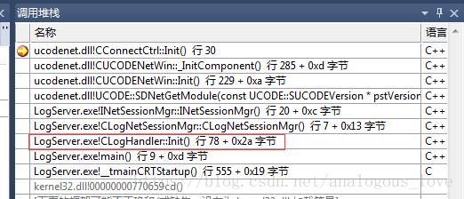
在CUCODENETWin::_InitComponent()中我们看到整个网络通信框架的初始化，初始化CConnDataMgr、CEventMgr、CConnectCtrl和CIocpCtrl。
bool CUCODENetWin::_InitComponent()
{
if (false == CConnDataMgr::Instance()->Init())
{
CRITICAL(_SDT("CUCODENetWin::_InitComponent, Init CConnDataMgr failed" ));
return false;
}
if(false == CEventMgr::Instance()->Init(MAX_NET_EVENT))
{
CRITICAL(_SDT("CUCODENetWin::_InitComponent, Init CEventMgr %d failed"), MAX_NET_EVENT);
return false;
}
if(false == CConnectCtrl::Instance()->Init())
{
CRITICAL(_SDT("CUCODENetWin::_InitComponent, Init CConnectCtrl failed"));
return false;
}
if(false == CIocpCtrl::Instance()->Init())
{
CRITICAL(_SDT("CUCODENetWin::_InitComponent, Init CIocpCtrl failed"));
return false;
}
return true;
}
而所有的这些初始化，都是在所谓的CLogNetSessionMgr中初始化的：
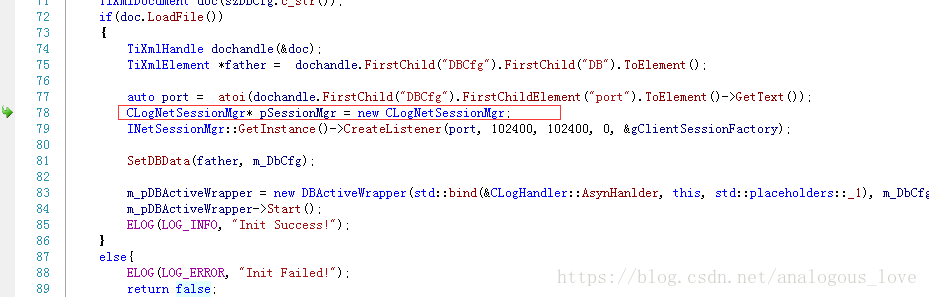
我们最终追溯到最上层的代码中：
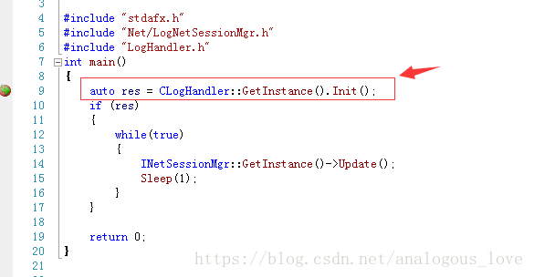
到这里，终于找到家了。
最后一批介绍的四个线程是完成端口线程，如下图所示：
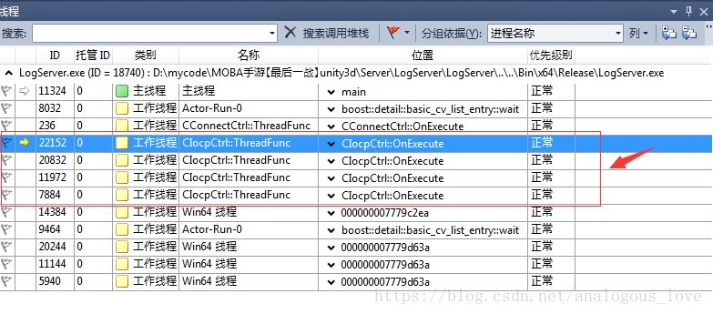
精华部分全在其线程函数中：
void CIocpCtrl::OnExecute()
{
SPerHandleData* pstPerHandleData;
SPerIoData* pstPerIoData;
CCPSock* poSock;
CCpListener* poListener;
BOOL bRet;
DWORD dwByteTrabsferred;
while(true)
{
pstPerHandleData = NULL;
pstPerIoData = NULL;
dwByteTrabsferred = 0;
bRet = GetQueuedCompletionStatus(
m_hCompletionPort,
&dwByteTrabsferred,
(PULONG_PTR)&pstPerHandleData,
(LPOVERLAPPED*)&pstPerIoData,
INFINITE);
// 检查是否是线程退出
if(NULL == pstPerHandleData)
{
return;
}
//当有客户端请求创建连接时
if(pstPerHandleData->bListen)
{
// for listen event
poListener = (CCpListener*)pstPerHandleData->ptr;
if(NULL != poListener && NULL != pstPerIoData)
{
poListener->OnAccept(bRet, pstPerIoData);
//printf("Accpet Count:%d \n", InterlockedIncrement((LONG*)&m_acceptCount) );
}
else
{
SDASSERT(false);
}
}
else
{
//for non-listen event
poSock = (CCPSock*)pstPerHandleData->ptr;
if ( NULL == poSock )
{
continue;
}
if( FALSE == bRet || NULL == pstPerIoData )
{
if (::WSAGetLastError()!=ERROR_IO_PENDING)
{
INFO(_SDT("[%s:%d]CCPSock connID=%d error %d, close it"),
MSG_MARK, poSock->GetConnectionID(), ::WSAGetLastError());
poSock->OnClose();
}
}
else
{
switch(pstPerIoData->nOp)
{
case IOCP_RECV:
{
poSock->DecPostRecv();
if (dwByteTrabsferred > 0)
{
poSock->OnRecv(dwByteTrabsferred);
}
else
{
INFO(_SDT("[%s:%d]CCPSock connID=%d error %d, close it, socket :%d "),
MSG_MARK, poSock->GetConnectionID(), ::WSAGetLastError(), poSock->GetSock());
poSock->OnClose();
}
}
break;
case IOCP_SEND:
{
poSock->DecPostSend();
if (dwByteTrabsferred > 0)
{
poSock->OnSend(dwByteTrabsferred);
}
else
{
INFO(_SDT("[%s:%d]CCPSock connID=%d error %d, close it"),
MSG_MARK, poSock->GetConnectionID(), ::WSAGetLastError());
poSock->OnClose();
}
}
break;
case IOCP_CLOSE:
{
poSock->OnClose(false);
}
break;
default:
;
}
}
}
}
}
我始终觉得，完成端口模型即使不从事Windows开发的linux服务器开发人员应该也要掌握一下。尤其是linux服务器开发人员需要给客户端人员设计网络通信层的企业。
我们看下，这四个线程在哪里启动的。
同样的方法，我们通过搜索，先找到：
unsigned CIocpCtrl::ThreadFunc(LPVOID pParam)
{
CIocpCtrl* poCtrl = (CIocpCtrl*)pParam;
poCtrl->m_threadBufPool.CreateThreadBuffer();
poCtrl->OnExecute();
poCtrl->m_threadBufPool.ReleaseThreadBuffer();
return 0;
}
进而进一步找到：
bool CIocpCtrl::Init()
{
//创建IO完成端口句柄
m_hCompletionPort = CreateIoCompletionPort(INVALID_HANDLE_VALUE, NULL, 0, 0);
if (m_hCompletionPort == NULL)
{
CRITICAL(_SDT("CIocpCtrl::Init, CreateIoCompletionPort failed, Error %d \n"), ::WSAGetLastError());
return false;
}
//获取当前服务器的CPU核数
SYSTEM_INFO stSysInfo;
GetSystemInfo(&stSysInfo);
m_nNumberOfWorkers = stSysInfo.dwNumberOfProcessors * THREAD_PER_CPU;
if (g_nThreadNum > 0)
{
m_nNumberOfWorkers = g_nThreadNum;
}
m_WorkerArray = new HANDLE[m_nNumberOfWorkers];
for (INT32 i = 0; i < m_nNumberOfWorkers; i++)
{
m_WorkerArray[i] = INVALID_HANDLE_VALUE;
}
//创建m_nNumberOfWorkers个线程
UINT dwThreadID = 0;
for (INT32 j = 0; j < m_nNumberOfWorkers; j++)
{
m_WorkerArray[j] = (HANDLE)_beginthreadex( NULL, // Security
0, // Stack size - use default
ThreadFunc, // Thread fn entry point
(void*)this, // Param for thread
0, // Init flag
&dwThreadID); // Thread address
if (NULL == m_WorkerArray[j])
{
m_nNumberOfWorkers = j;
this->Uninit();
CRITICAL(_SDT("CIocpCtrl::Init, Create Worker thread failed, Close Handler\n"));
return false;
}
}
return true;
}
然后同样的方法在CIocpCtrl::Init()处加个断点，重新跑下程序，得到如下调用堆栈：
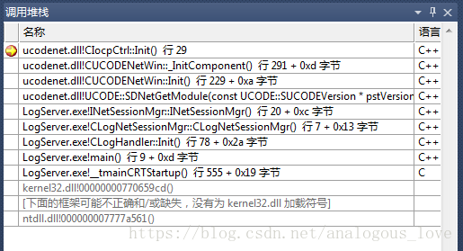
我们上文中已经介绍过了，这里就不再重复说明：
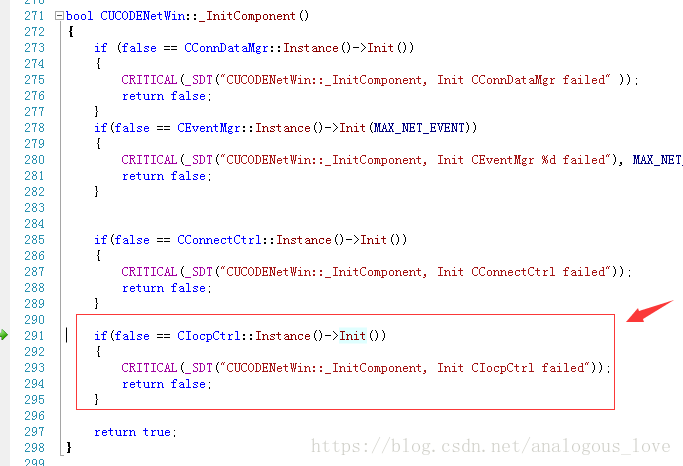
通过分析，我们知道LogServer大致的技术框架，业务细节和技术细节，我们在后面的文章中会接着介绍。我们当前的目的是快速把所有的服务的技术框架给熟悉一遍。
源码下载方法：
微信搜索公众号『高性能服务器开发』(中文名：高性能服务器开发)，关注公众号后，在公众号中回复『英雄联盟』，即可得到下载链接。（喷子和代码贩子请远离！）